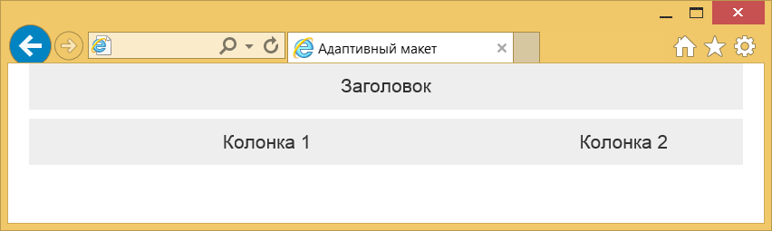
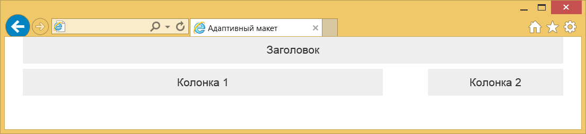

Адаптивный дизайн
Адаптивным дизайном называется способ вёрстки, когда ширина макета веб-страницы подстраивается под ширину устройства. Самый простой вариант — это пропорциональное изменение масштаба, но на деле лучше менять и расположение элементов и их размеры. Так мы получим наиболее оптимальный вид для смартфонов, планшетов и мониторов.
В Bootstrap уже заложены возможности адаптивного дизайна. Если вы сделаете простой многоколоночный макет, а затем начнёте уменьшать ширину окна браузера, то заметите, что изменяется и сам макет. Но этим всё не ограничивается, гораздо интереснее немного менять сам макет чтобы он наилучшим образом соответствовал устройству. Для этого введены ключевые слова, которые встречаются в именах классов, они представлены в табл. 1.
| Устройство | Имя | Ширина макета |
|---|---|---|
| Смартфон | xs | Менее 768px |
| Планшет | sm | 768px и больше |
| Монитор | md | 992px и больше |
| Монитор с высоким разрешением | lg | 1200px и больше |
Чтобы задать ширину колонок для смартфонов достаточно в код включить класс col-xs-N, для мониторов он уже будет именоваться col-md-N. Любые классы можно комбинировать между собой, если класс для выбранного устройства не указан, то он наследуется снизу вверх. Это значит, что макет для смартфона будет выглядеть так же, как и макет для монитора. Но не наоборот. Именно поэтому вёрстка всегда начинается с макета для смартфона, затем уже идёт планшет и монитор.
Поскольку мы теперь ориентируемся на мобильные устройства, то внутрь <head> надо добавить следующую строку.
<meta name="viewport" content="width=device-width, initial-scale=1.0">Теперь наш дизайн будет масштабироваться по ширине устройства и выглядеть оптимально, особенно на устройствах с маленьким экраном.
С учётом этой строки и новых классов сделаем простой макет с двумя колонками (пример 1).
Пример 1. Адаптивный макет
<!doctype html>
<html>
<head>
<meta charset="utf-8">
<title>Адаптивный макет</title>
<meta name="viewport" content="width=device-width, initial-scale=1.0">
<link href="css/bootstrap.min.css" rel="stylesheet">
<style>
[class*="col-"] {
background-color: #eee;
text-align: center;
padding-top: 10px;
padding-bottom: 10px;
margin-bottom: 10px;
font-size: 2rem;
}
</style>
</head>
<body>
<div class="container">
<div class="row">
<div class="col-xs-12">Заголовок</div>
<div class="col-xs-12 col-sm-8 col-md-8">Колонка 1</div>
<div class="col-xs-12 col-sm-4 col-md-3 col-md-offset-1">Колонка 2</div>
</div>
</div>
<script src="js/jquery.min.js"></script>
<script src="js/bootstrap.min.js"></script>
</body>
</html>Для тестирования макета не обязательно смотреть его на каком-то заданном устройстве, достаточно уменьшить ширину окна браузера и мы сразу же увидим изменения. На рис. 1-3 показан результат данного примера при разной ширине окна.
Рис. 1. Вид на смартфоне

Рис. 2. Вид на планшете

Рис. 3. Вид на мониторе
Мы рассмотрели самый простой случай, когда расположение элементов практически не меняется относительно друг друга. Как быть, если потребуется переставить элементы местами или кое-что убрать для маленьких экранов? Напрямую это сделать не получится, поэтому пойдём на небольшую хитрость — добавим два одинаковых элемента в разных местах и будем один прятать, а другой отображать. Bootstrap предлагает два набора классов для сокрытия и показа элементов в зависимости от ширины окна — hidden-xs и visible-xs-block. Принцип тот же, что и при работе с колонками, вместо xs подставляем нужное ключевое слово. В примере 2 показано как «перемещать» таким образом заголовок.
Пример 2. Изменение положения заголовка
<div class="container">
<div class="row">
<div class="col-xs-12 hidden-xs">Заголовок</div>
<div class="col-xs-12 col-sm-8 col-md-8">Колонка 1</div>
<div class="col-xs-12 col-sm-4 col-md-3 col-md-offset-1">Колонка 2</div>
<div class="col-xs-12 visible-xs-block">Заголовок</div>
</div>
</div>Результат данного примера показан на рис. 4.

Рис. 4. Заголовок внизу колонок при узкой ширине окна
В данном примере класс hidden-xs означает, что колонку для смартфонов следует прятать, а visible-xs-block — наоборот, показывать. При просмотре на широком экране заголовок будет всегда вверху, а на узком внизу.

Все материалы сайта доступны по лицензии Creative Commons «Attribution-NonCommercial» («Атрибуция — Некоммерческое использование») 4.0 Всемирная, если не указано иное.